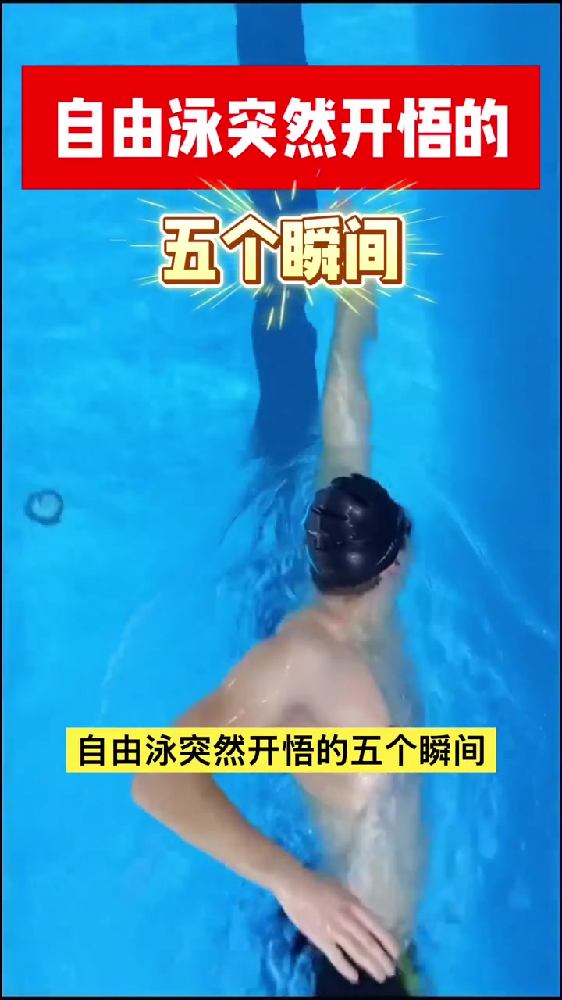
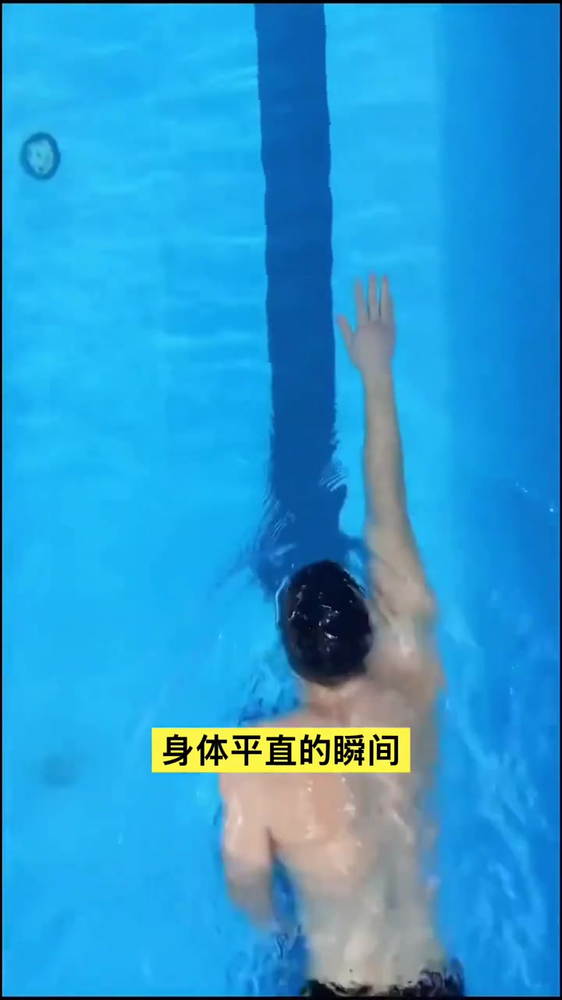
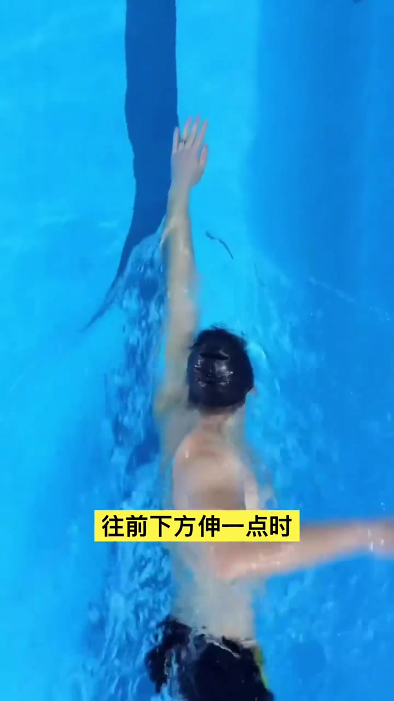
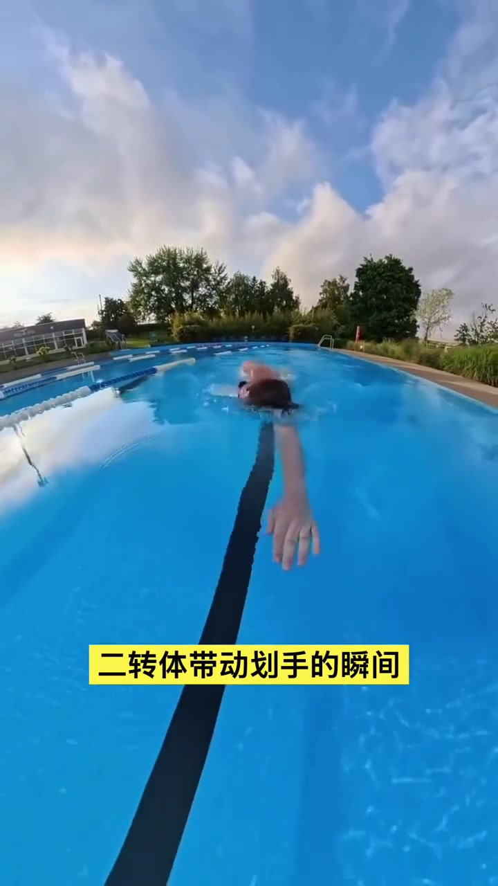
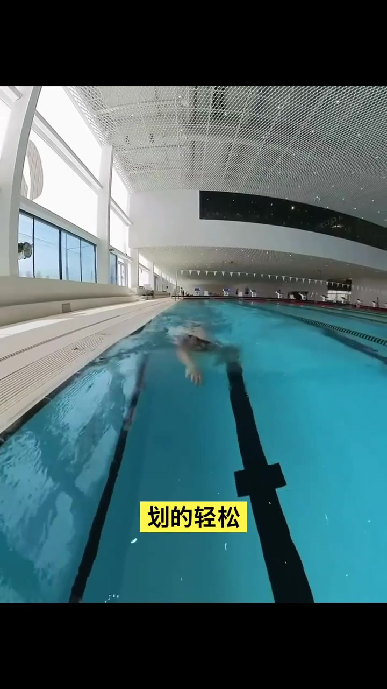
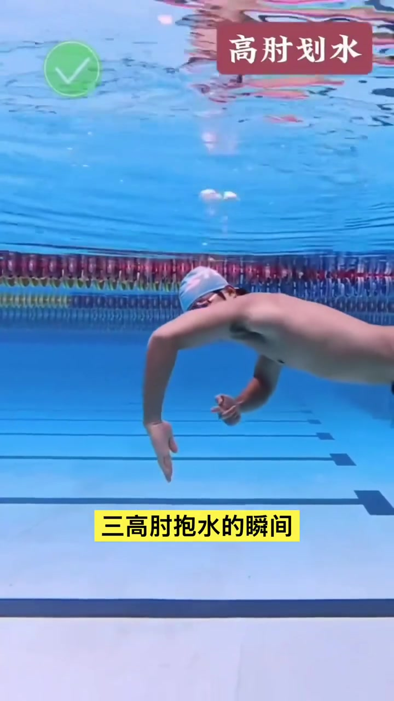
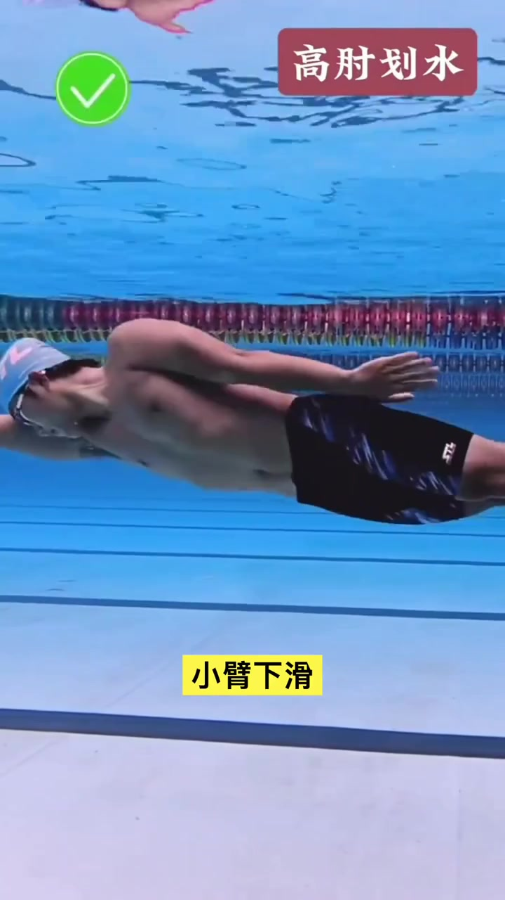
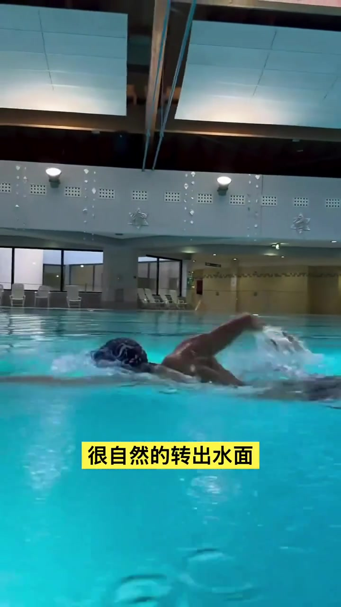

开场：自由泳突然开悟的五个瞬间
竖屏标题屏叠在俯拍泳池画面上：红底白字「自由泳突然开悟的」，金色大字「五个瞬间」。整支片子不是长课拆解，而是把五个体感节点快速串起来，让人对照自己什么时候「突然会了」。
说明：Whisper 把「自由泳」识成「自由擁」、把「划手」识成「滑手」、把「高肘抱水」识成「高走暴水」、把「游得」识成「有得 / 留得」。下文叙述结合画面字幕校正；完整转录区仍保留 Whisper 原始分段。

一、重心前移，身体平直的瞬间
口播进入第一点：重心前移、身体平直。俯拍里泳者沿泳道线伸展，黄底字幕打出「身体平直的瞬间」。关键动作是手入水后往前下方再伸一点——身体会自然上浮，形成平直流线型，划手和打腿都变轻松。
「当手入水后往前下方伸一点时，身体会自然上浮，平直的流线型，划手打腿都很轻松。」


二、转体带动划手的瞬间
第二点切到水面前方跟拍：字幕「二转体带动划手的瞬间」。口播强调——再怎么用力划手，也不如把身体转起来；转起来后划得轻松、游得更快。手像抓住水以后，是被身体转动带着走，而不是只靠手臂硬拽。
「再怎么用力划手，也不如把身体转起来……手像抓住水后被身体转动带着走。」


三、高肘抱水的瞬间
水下特写出现红标「高肘划水」、黄标「三高肘抱水的瞬间」。口播纠正常见习惯：手入水后不是立刻发力往下压，而是大臂内旋固定住，曲折小臂下滑抱住水——第一次感觉到推着水往前走。
「手入水后不是立刻发力往下压，而是大臂内旋固定住，曲折小臂下滑抱住水。」


四、换气轻松的瞬间
画面回到水面近景。口播讲换气：学会转头不抬头——头随着身体转动，很自然地转出水面换气，节奏稳定、吸气足。黄底字幕对应「很自然的转出水面」。
「你学会了转头不抬头……头是随着身体的转动，很自然的转出水面换气。」

五、不用拼命打腿也能游得很轻松
收束落在打腿：不是拼命踢水，而是发现打腿是为了维持身体平衡和流线型；随着身体滚动有节奏地打腿，反而游得更轻松、更平稳。画面叠英文「more you slide, faster you go」，黄标「也能游得很轻松的瞬间」「随着身体的滚动」。
「当打腿是为了维持身体平衡和流线型……随着身体的滚动有节奏地打腿，反而游得更轻松更平稳。」
五个瞬间串完：平直 → 转体 → 高肘抱水 → 轻松换气 → 节奏打腿。短片用体感节点而不是术语堆叠，把「突然会了」的感觉钉在具体动作上。